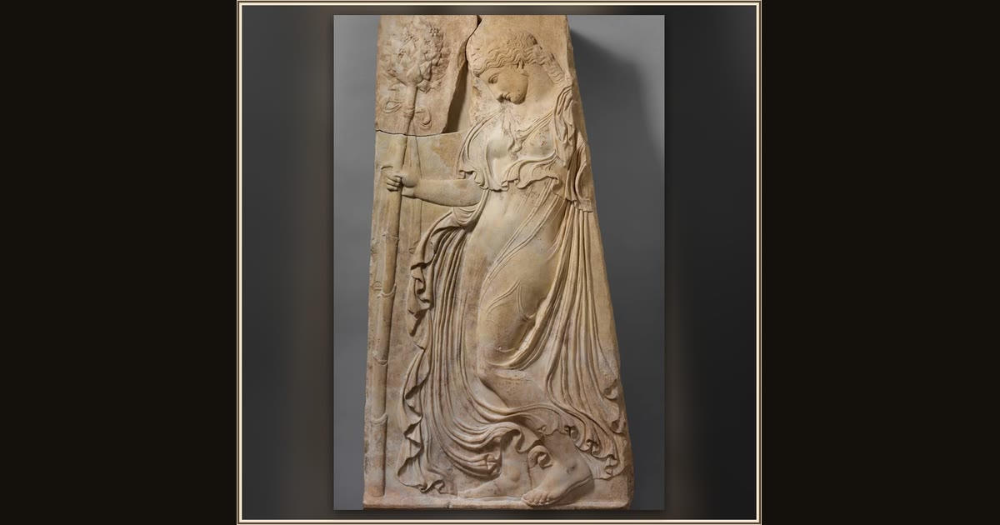

Marble relief with a dancing maenad
Roman; adaptation of work attributed to Kallimachos · ca. 27 BCE–14 CE · met
A maenad in a flowing dress bows her head as she holds a leaf-topped staff; the chorus calls for Bacchic dance and thyrsoi (110) Explore its place in Euripides's Plays, Bacchae, line 115.